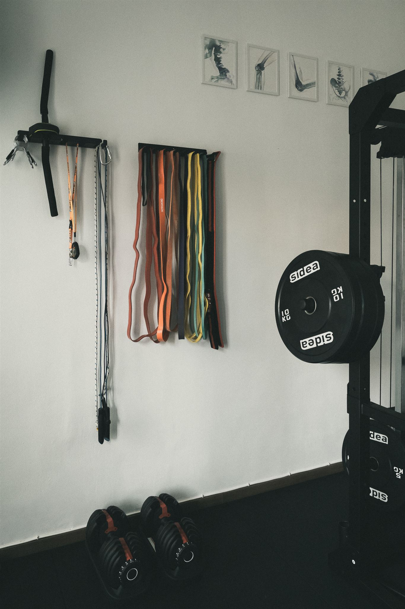
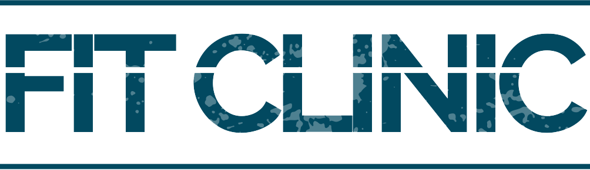

Spazi professionali per salute, movimento e performance

Fit Clinic nasce come spazio di lavoro dedicato ai professionisti della salute, della riabilitazione e del movimento. Ambienti indipendenti, attrezzati e pronti all’utilizzo, pensati per chi cerca uno studio professionale senza rinunciare alla propria autonomia.
Uno spazio riservato, luminoso e completamente attrezzato per l’attività professionale individuale.
Lo studio è pensato per fisioterapisti, osteopati, nutrizionisti, psicologi e altri professionisti dell’area salute, con un ambiente curato nel quale ricevere i propri pazienti in completa autonomia.
Disponibile con formule flessibili a giornata o mezza giornata, permette di avere uno spazio professionale stabile senza i costi e gli impegni di uno studio indipendente.
Uno spazio dedicato al personal training, alla preparazione atletica, alla rieducazione motoria e al lavoro individuale.
La sala è attrezzata per permettere al professionista di lavorare con il proprio cliente in un ambiente riservato, senza le dinamiche e le limitazioni di una palestra tradizionale.
Può essere utilizzata in modo flessibile, anche a ore, ed è pensata per personal trainer e professionisti che cercano uno spazio funzionale nel quale sviluppare il proprio metodo di lavoro.
{kind=link}
{kind=link}
{kind=link}
{kind=link}